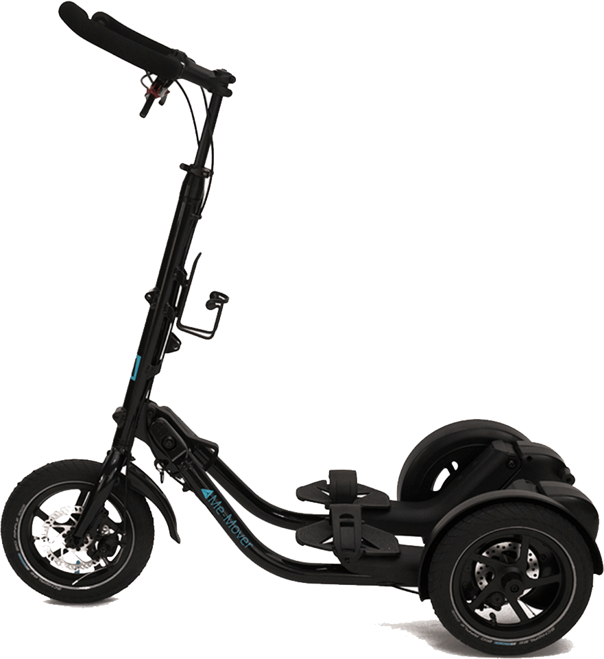

The Me-Mover story
The founder and chief designer of Me-Mover, the architect Jonas
Eliasson, had become really tired of his long, inactive and boring
commute. Combined with a running injury and an annoyance at not
being able to exercise, Jonas began to consider how he could
utilize the transportation time to exercise. It should be fun,
efficient and easy to move.
Jonas lived outside Stockholm and to get to work he used the
metro. But Jonas lived a good distance from the nearest metro and
therefore he spent a long time just reaching the station. Jonas
was an avid in-line skater, but a previous injury, cobbled stone
roads and the frequent Swedish summer rain made the trip either
completely impossible or just unsafe. Bicycles were not a good
alternative, as this was not particularly effective as
rehabilitation or for exercise and otherwise was not allowed on
the subway.
This became the starting point for the idea of Me-Mover: A means
of transport that combined effective and gentle training. For many
years the idea was rumored and at the end of 2008 Jonas decided to
draw Me-Mover version 1.0.

What is a Me-Mover?
Me-Mover Fit is a step bike that makes training and fitness a fun
and exciting training experience. The technique itself only takes
a few minutes to learn, and the ergonomic training movement
activates 6 large muscle groups. Me-Mover was originally intended
as a means of combining transport and effective training. But
right from the start, Me-Mover received very positive reviews from
users who had used Me-Mover to rehabilitate sports injuries.
People with chronic ailments, injuries and disabilities said that
after becoming acquainted with Me-Mover, they could now start
exercising again. There was also feedback from people who
practiced sports at a professional level. They described that they
had been able to increase their training volume by up to 15% per
week. In elite sports, a few percentages or per mille are usually
what you operate with. Therefore, Me-Mover initiated an experiment
which was carried out by an internationally recognized test
laboratory. The result showed that Me-Mover's shock load, even at
the highest training intensity, is less than walking and thus is
more gentle on the back and joints.